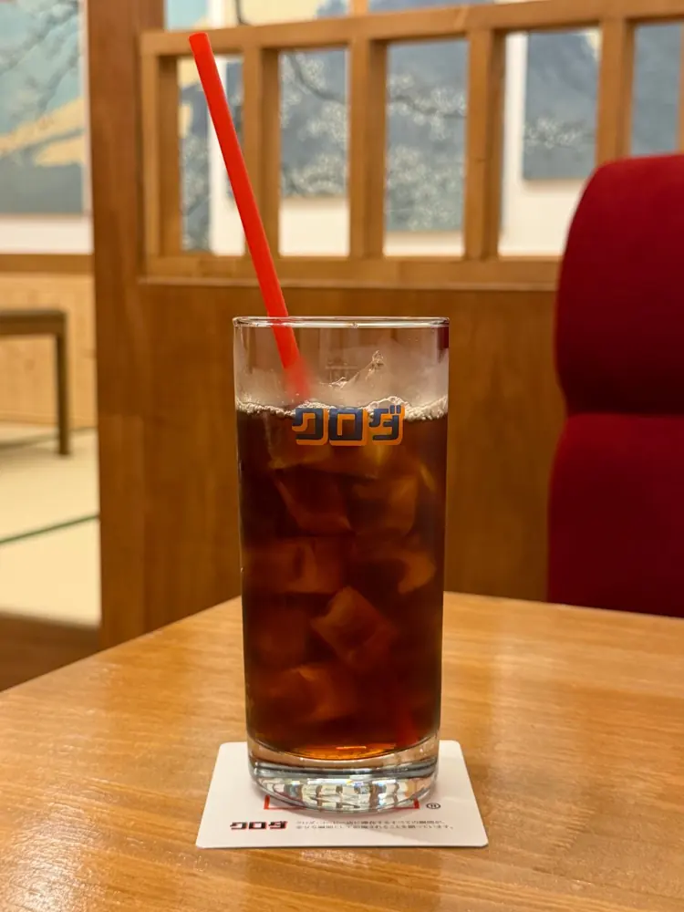
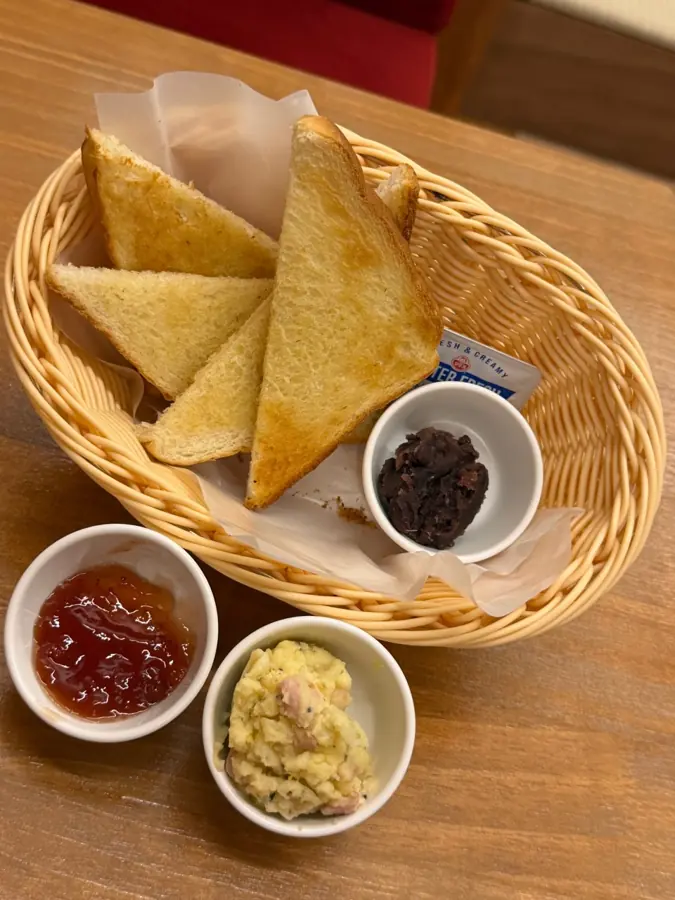
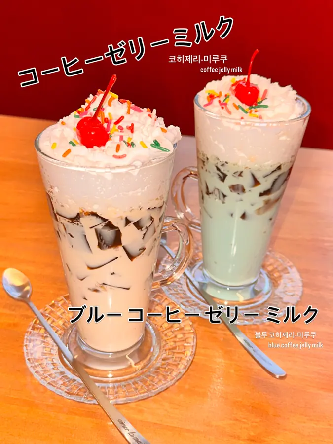
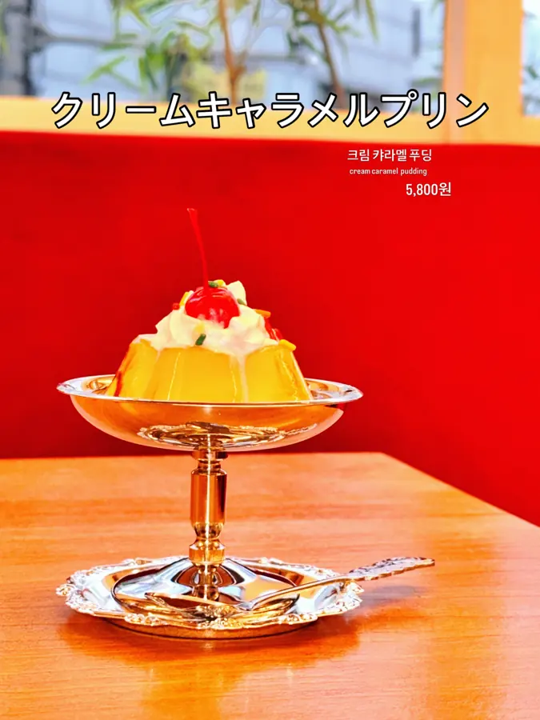
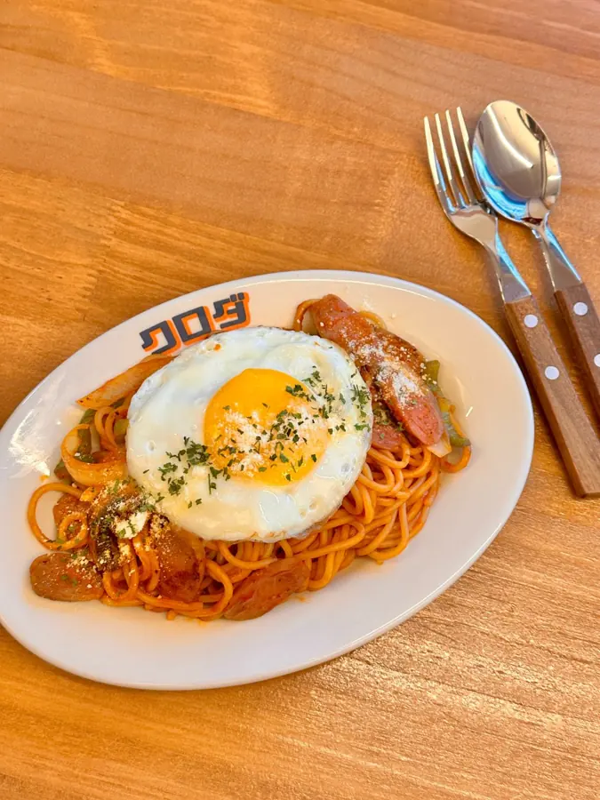
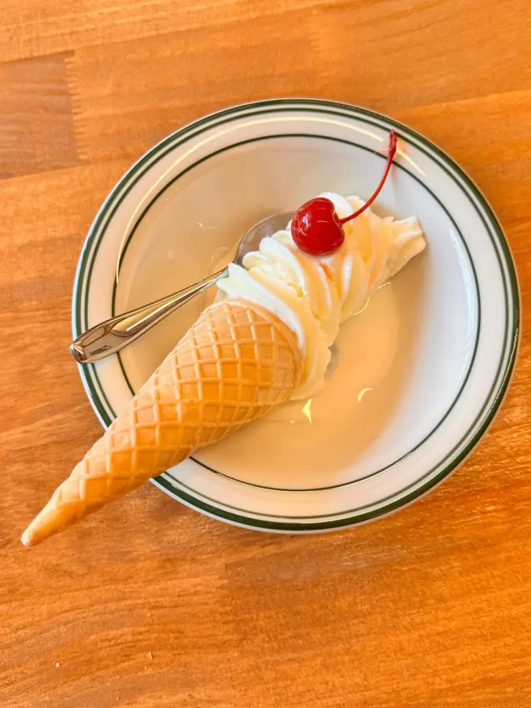
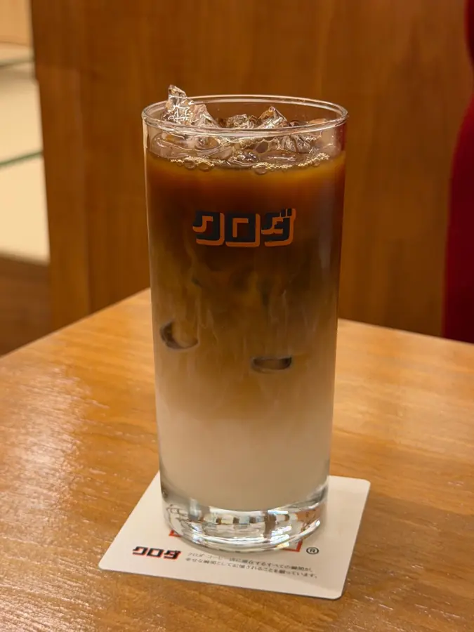
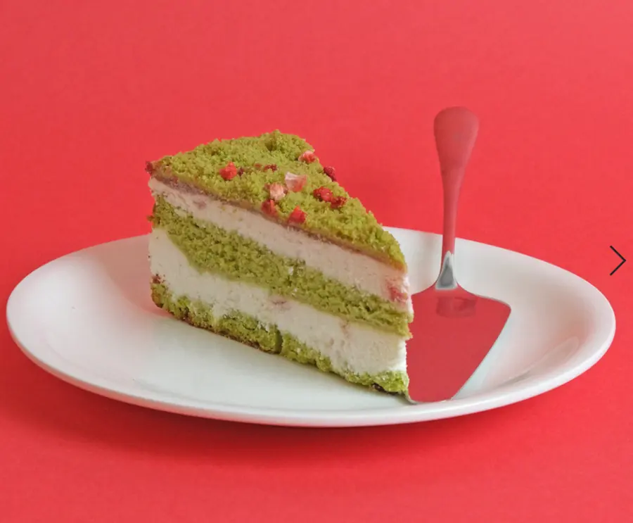

喫茶 クロダ
가장 커피스러운
한 잔을, 천천히
ゆっくり、珈琲をどうぞ。
시간에 쫓기듯 마시는 아이스 아메리카노 대신, 멋도 기교도 부리지 않은 한 잔을 천천히 만끽(滿喫)하며 공상에 잠길 수 있는 곳. 전주 남노송동의 작은 커피점입니다.
営業10:00 – 21:00 · 화·수 휴무 · 모닝세트 개점 ~ 낮 12시

ごあいさつ
쿠로다 커피점입니다
いらっしゃいませ
때로는 업무시간에 잠시 쉼으로, 주말 아침 덜 깬 잠 속에서 여유의 향기를, 친구와 시시콜콜 일상 이야기, 연인과의 행복한 기억의 추억으로.
자신만의 가장 즐거운 방법으로 저희 가게를 즐겨주세요. 당점은 고객님들의 편안한 시간을 위해, 친절함과 편안함 그리고 즐거움의 미소로 응대하겠습니다.
늘 신세지고 있습니다. · いつもお世話になっております。
朝をしっかりと!!
モーニングセット
쿠로다 모닝세트 · 아침 10시 개점 ~ 낮 12시
毎朝開店 ~ PM12:00まで
음료 한 잔을 시키면 토스트가 무료예요.
- 음료 + 토스트 (토핑 2가지 선택)トースト無料음료값만
- 토스트 대신 바꾸고 싶다면
- 모닝 시리얼로 변경モーニングシリアル+1,800원
- 쿠로다 팬케익으로 변경クロダパンケーキ+2,200원

喫茶の定番
대표 메뉴
일본 킷사텐에서 오래 사랑받아 온 그 맛 그대로.






アクセス
오시는 길
남노송동 삼거리, 장어덮밥 가게 우나기대정의 2층입니다.
- 주소住所
- 전북 전주시 완산구 관선1길 54 2층우나기대정 우측 골목으로 10m 안쪽 계단으로 천천히 올라와 주세요.
- 영업営業時間
- 10:00 – 21:00모닝세트 개점 ~ 낮 12시
- 휴무定休日
- 매주 화요일 · 수요일
- 전화電話
- 063-288-9543